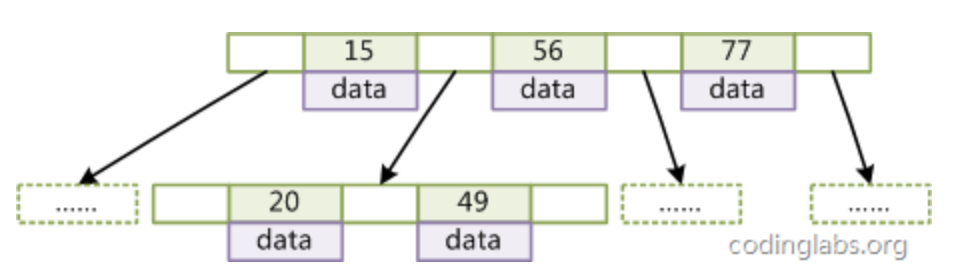
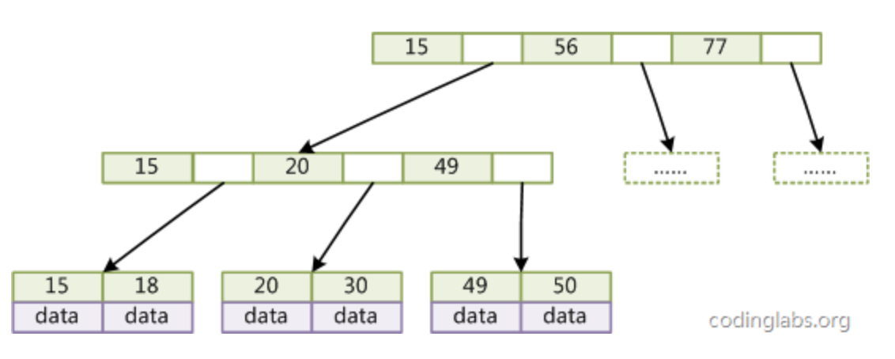

<!DOCTYPE html>
<html>
<head><meta name="generator" content="Hexo 3.8.0">
  <meta charset="utf-8">
  

  
  <title>B-tree数据结构 | Imoko</title>
  <meta name="viewport" content="width=device-width, initial-scale=1, maximum-scale=1">
  <meta name="description" content="btree的go实现：https://github.com/sutoo/btree/blob/master/btree.go 12345678910111213141516171819202122232425262728293031323334353637// Item represents a single object in the tree.type Item interface &amp;#123">
<meta property="og:type" content="article">
<meta property="og:title" content="B-tree数据结构">
<meta property="og:url" content="http://yoursite.com/2018/11/22/BTreeStruct/index.html">
<meta property="og:site_name" content="Imoko">
<meta property="og:description" content="btree的go实现：https://github.com/sutoo/btree/blob/master/btree.go 12345678910111213141516171819202122232425262728293031323334353637// Item represents a single object in the tree.type Item interface &amp;#123">
<meta property="og:locale" content="default">
<meta property="og:image" content="http://yoursite.com/2018/11/22/BTreeStruct/image-20180913183329671.png">
<meta property="og:image" content="http://yoursite.com/2018/11/22/BTreeStruct/image-20180913183401336.png">
<meta property="og:updated_time" content="2018-11-22T06:24:29.000Z">
<meta name="twitter:card" content="summary">
<meta name="twitter:title" content="B-tree数据结构">
<meta name="twitter:description" content="btree的go实现：https://github.com/sutoo/btree/blob/master/btree.go 12345678910111213141516171819202122232425262728293031323334353637// Item represents a single object in the tree.type Item interface &amp;#123">
<meta name="twitter:image" content="http://yoursite.com/2018/11/22/BTreeStruct/image-20180913183329671.png">
  
    <link rel="alternate" href="/atom.xml" title="Imoko" type="application/atom+xml">
  
  
    <link rel="icon" href="/favicon.png">
  
  
    <link href="//fonts.googleapis.com/css?family=Source+Code+Pro" rel="stylesheet" type="text/css">
  
  <link rel="stylesheet" href="/css/style.css">
</head>
</html>
<body>
  <div id="container">
    <div id="wrap">
      <header id="header">
  <div id="banner"></div>
  <div id="header-outer" class="outer">
    <div id="header-title" class="inner">
      <h1 id="logo-wrap">
        <a href="/" id="logo">Imoko</a>
      </h1>
      
    </div>
    <div id="header-inner" class="inner">
      <nav id="main-nav">
        <a id="main-nav-toggle" class="nav-icon"></a>
        
          <a class="main-nav-link" href="/">Home</a>
        
          <a class="main-nav-link" href="/archives">Archives</a>
        
      </nav>
      <nav id="sub-nav">
        
          <a id="nav-rss-link" class="nav-icon" href="/atom.xml" title="RSS Feed"></a>
        
        <a id="nav-search-btn" class="nav-icon" title="Search"></a>
      </nav>
      <div id="search-form-wrap">
        <form action="//google.com/search" method="get" accept-charset="UTF-8" class="search-form"><input type="search" name="q" class="search-form-input" placeholder="Search"><button type="submit" class="search-form-submit">&#xF002;</button><input type="hidden" name="sitesearch" value="http://yoursite.com"></form>
      </div>
    </div>
  </div>
</header>
      <div class="outer">
        <section id="main"><article id="post-BTreeStruct" class="article article-type-post" itemscope="" itemprop="blogPost">
  <div class="article-meta">
    <a href="/2018/11/22/BTreeStruct/" class="article-date">
  <time datetime="2018-11-22T06:24:29.000Z" itemprop="datePublished">2018-11-22</time>
</a>
    
  </div>
  <div class="article-inner">
    
    
      <header class="article-header">
        
  
    <h1 class="article-title" itemprop="name">
      B-tree数据结构
    </h1>
  

      </header>
    
    <div class="article-entry" itemprop="articleBody">
      
        <p>btree的go实现：<a href="https://github.com/sutoo/btree/blob/master/btree.go" target="_blank" rel="noopener">https://github.com/sutoo/btree/blob/master/btree.go</a></p>
<figure class="highlight go"><table><tr><td class="gutter"><pre><span class="line">1</span><br><span class="line">2</span><br><span class="line">3</span><br><span class="line">4</span><br><span class="line">5</span><br><span class="line">6</span><br><span class="line">7</span><br><span class="line">8</span><br><span class="line">9</span><br><span class="line">10</span><br><span class="line">11</span><br><span class="line">12</span><br><span class="line">13</span><br><span class="line">14</span><br><span class="line">15</span><br><span class="line">16</span><br><span class="line">17</span><br><span class="line">18</span><br><span class="line">19</span><br><span class="line">20</span><br><span class="line">21</span><br><span class="line">22</span><br><span class="line">23</span><br><span class="line">24</span><br><span class="line">25</span><br><span class="line">26</span><br><span class="line">27</span><br><span class="line">28</span><br><span class="line">29</span><br><span class="line">30</span><br><span class="line">31</span><br><span class="line">32</span><br><span class="line">33</span><br><span class="line">34</span><br><span class="line">35</span><br><span class="line">36</span><br><span class="line">37</span><br></pre></td><td class="code"><pre><span class="line"><span class="comment">// Item represents a single object in the tree.</span></span><br><span class="line"><span class="keyword">type</span> Item <span class="keyword">interface</span> &#123;</span><br><span class="line">	<span class="comment">// Less tests whether the current item is less than the given argument.</span></span><br><span class="line">	<span class="comment">//</span></span><br><span class="line">	<span class="comment">// This must provide a strict weak ordering.</span></span><br><span class="line">	<span class="comment">// If !a.Less(b) &amp;&amp; !b.Less(a), we treat this to mean a == b (i.e. we can only</span></span><br><span class="line">	<span class="comment">// hold one of either a or b in the tree).</span></span><br><span class="line">	Less(than Item) <span class="keyword">bool</span></span><br><span class="line">&#125;</span><br><span class="line"></span><br><span class="line"><span class="keyword">type</span> items []Item</span><br><span class="line"><span class="comment">// children stores child nodes in a node.</span></span><br><span class="line"><span class="keyword">type</span> children []*node</span><br><span class="line"></span><br><span class="line"><span class="comment">// node is an internal node in a tree.</span></span><br><span class="line"><span class="comment">//</span></span><br><span class="line"><span class="comment">// It must at all times maintain the invariant that either</span></span><br><span class="line"><span class="comment">//   * len(children) == 0, len(items) unconstrained</span></span><br><span class="line"><span class="comment">//   * len(children) == len(items) + 1</span></span><br><span class="line"><span class="keyword">type</span> node <span class="keyword">struct</span> &#123;</span><br><span class="line">	items    items</span><br><span class="line">	children children</span><br><span class="line">	cow      *copyOnWriteContext</span><br><span class="line">&#125;</span><br><span class="line"><span class="comment">// BTree is an implementation of a B-Tree.</span></span><br><span class="line"><span class="comment">//</span></span><br><span class="line"><span class="comment">// BTree stores Item instances in an ordered structure, allowing easy insertion,</span></span><br><span class="line"><span class="comment">// removal, and iteration.</span></span><br><span class="line"><span class="comment">//</span></span><br><span class="line"><span class="comment">// Write operations are not safe for concurrent mutation by multiple</span></span><br><span class="line"><span class="comment">// goroutines, but Read operations are.</span></span><br><span class="line"><span class="keyword">type</span> BTree <span class="keyword">struct</span> &#123;</span><br><span class="line">	degree <span class="keyword">int</span></span><br><span class="line">	length <span class="keyword">int</span></span><br><span class="line">	root   *node</span><br><span class="line">	cow    *copyOnWriteContext</span><br><span class="line">&#125;</span><br></pre></td></tr></table></figure>
<p>node是Btree中的一个节点。</p>
<p>items 表示key的列表， items中的gap对应一个children node。</p>
<p>###BTree Struct</p>
<h4 id="方法介绍："><a href="#方法介绍：" class="headerlink" title="方法介绍："></a>方法介绍：</h4><p><code>maxItems</code> degree * 2 -1 ，每个node中，items的最大值。</p>
<p><code>minItems</code>degree - 1，node中，items的最小值。</p>
<p>###Btree and B+tree</p>
<p>Btree:</p>
<p></p>
<p>B+tree:</p>
<p></p>

      
    </div>
    <footer class="article-footer">
      <a data-url="http://yoursite.com/2018/11/22/BTreeStruct/" data-id="cjos93nr500002xwk1t8e4b3b" class="article-share-link">Share</a>
      
      
    </footer>
  </div>
  
    
<nav id="article-nav">
  
    <a href="/2018/11/22/Java_synchronizer/" id="article-nav-newer" class="article-nav-link-wrap">
      <strong class="article-nav-caption">Newer</strong>
      <div class="article-nav-title">
        
          JVM Synchronizer
        
      </div>
    </a>
  
  
    <a href="/2018/11/22/hystrix/" id="article-nav-older" class="article-nav-link-wrap">
      <strong class="article-nav-caption">Older</strong>
      <div class="article-nav-title">Hystrix简介</div>
    </a>
  
</nav>

  
</article>

</section>
        
          <aside id="sidebar">
  
    

  
    

  
    
  
    
  <div class="widget-wrap">
    <h3 class="widget-title">Archives</h3>
    <div class="widget">
      <ul class="archive-list"><li class="archive-list-item"><a class="archive-list-link" href="/archives/2018/11/">November 2018</a></li><li class="archive-list-item"><a class="archive-list-link" href="/archives/2018/10/">October 2018</a></li><li class="archive-list-item"><a class="archive-list-link" href="/archives/2018/08/">August 2018</a></li><li class="archive-list-item"><a class="archive-list-link" href="/archives/2018/07/">July 2018</a></li><li class="archive-list-item"><a class="archive-list-link" href="/archives/2018/05/">May 2018</a></li><li class="archive-list-item"><a class="archive-list-link" href="/archives/2018/04/">April 2018</a></li></ul>
    </div>
  </div>


  
    
  <div class="widget-wrap">
    <h3 class="widget-title">Recent Posts</h3>
    <div class="widget">
      <ul>
        
          <li>
            <a href="/2018/11/22/Java_synchronizer/">JVM Synchronizer</a>
          </li>
        
          <li>
            <a href="/2018/11/22/BTreeStruct/">B-tree数据结构</a>
          </li>
        
          <li>
            <a href="/2018/11/22/hystrix/">Hystrix简介</a>
          </li>
        
          <li>
            <a href="/2018/11/22/DBs_mysql_locks/">Mysql Locks</a>
          </li>
        
          <li>
            <a href="/2018/11/22/consul-simple/">Consul简介</a>
          </li>
        
      </ul>
    </div>
  </div>

  
</aside>
        
      </div>
      <footer id="footer">
  
  <div class="outer">
    <div id="footer-info" class="inner">
      &copy; 2018 Tao<br>
      Powered by <a href="http://hexo.io/" target="_blank">Hexo</a>
    </div>
  </div>
</footer>
    </div>
    <nav id="mobile-nav">
  
    <a href="/" class="mobile-nav-link">Home</a>
  
    <a href="/archives" class="mobile-nav-link">Archives</a>
  
</nav>
    

<script src="//ajax.googleapis.com/ajax/libs/jquery/2.0.3/jquery.min.js"></script>


  <link rel="stylesheet" href="/fancybox/jquery.fancybox.css">
  <script src="/fancybox/jquery.fancybox.pack.js"></script>


<script src="/js/script.js"></script>


  </div>
</body>
</html>